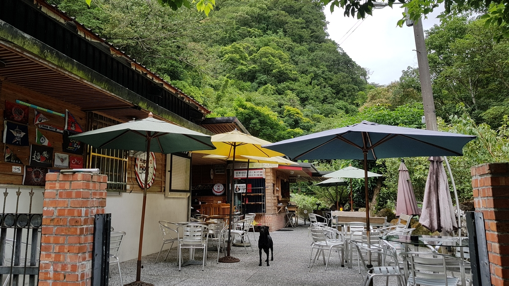
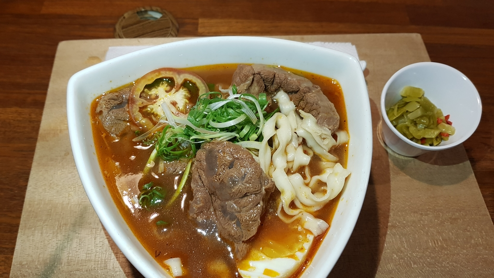

老玩童礦坑咖啡
google評價：4.5★
店家資訊
地址：新北市平溪區靜安路二段11巷
營業時間：周六和周日早上7:00到晚上6:00，周一早上9:00到下午4:00
店家電話：02-2495-1728

推薦菜單
過分牛肉麵280元 香酥三星蔥棒160元
素麻油猴頭菇麵280元 炸雞皮糯米腸240元 歡樂綜合拼盤400元
美式黑咖啡120元 焦糖黑咖啡150元 經典拿鐵150元
可可鮮奶180 百香果冰茶150元 小朋友蘋果汁100元
顧客評論
這家營業時間不多，但有時例假日會開店，可以打電話詢問，而店內招牌的就是牛肉麵，牛肉麵是粗的麵條，咀嚼起來QQ的，比一般的麵條跟能鎖住湯頭的精華，肉量也非常足夠，瘦肉和油花分布的恰到好處，配上生洋蔥跟檸檬片非常清爽，湯頭是濃郁酸甜的番茄湯頭，和牛肉的鮮美相輔相成。店內還有特別的香酥三星蔥棒，是把蔥油餅做成棒狀，讓脆口感大大提升。